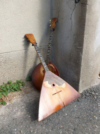

The group Srazhalys was unwittingly formed in 2002 when J Roth mistook a domra for a balalaika. He’d been traveling across Russia looking for an affordable balalaika to bring home with him. It wasn’t until his final destination: St. Petersburg that he found a secondhand shop selling folk instruments. After carefully scrutinizing each instrument, he made his choice and took it to the counter to purchase only to be informed that it was not a balalaika but a domra. This was in a dilemma. J had really wanted a balalaika, but he’d already developed an attachment to the domra he’d chosen. Defying reason and practicality, he bought both instruments and thus the band Srazhalys was formed, for these instruments – more than their players – are the heart of the music and the ensemble.
It’s a working-class hero story (post-Soviet collapse style) of how the instruments made it safely to the U.S., but that’s a tale for another time. Suffice it to say, they arrived after many months and almost immediately the song Bala was composed with Mags following not long after. J couldn’t play both the balalaika and domra at the same time so he recruited his cousin-friend Paul Cameron to see if he could make sense of these three-stringed instruments. Paul was instantly hooked. Starting in 2004, the four of them (J, Paul, domra, balalaika) began to make musical appearances around Minneapolis. Guest guitar players including Steve Siekennin, John Knauss, and Tony ‘Sir Anthony’ Sandusky joined them for shows.
It wasn’t until 2009 though, that Srazhalys found it’s next core member: Ryan Murphy. Ryan was the younger cousin of J & Paul and, though originally recruited to play guitar, Ryan soon got his hands on the balalaika and domra and was instantly coaxing new rhythms and melodies out of them. It wasn’t long before he began writing new songs for the group.
The next year, bassist Matt Ides was added to the group. Matt brought a sense of purpose and organization to the ensemble and has been responsible for Srazhalys’ recent emergence into the wider public sphere. He’s a solid, versatile bass player, using bow and fingers to give the sound of Srazhalys a richer texture.
Recently, in 2014, four new instruments have been added to the ensemble: Matt has created an eight string acoustic bass; Paul has acquired a bouzouki; Ryan has brought in a tenor guitar; and J has added his mandolin into the mix.
Instrument members of the group:
- balalaika
- domra
- guitars (acoustic, classical, tenor)
- double bass
- clarinet
- concertina
- bouzouki
- 8 string bass
- mandolin